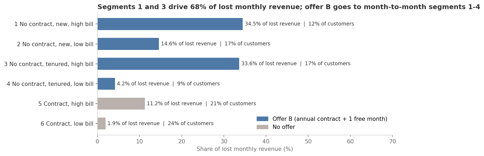
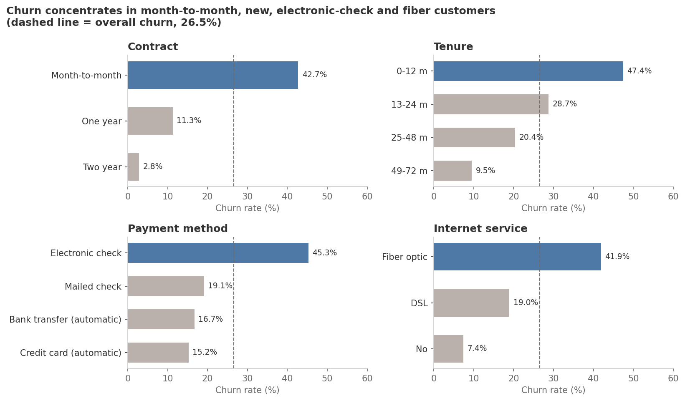
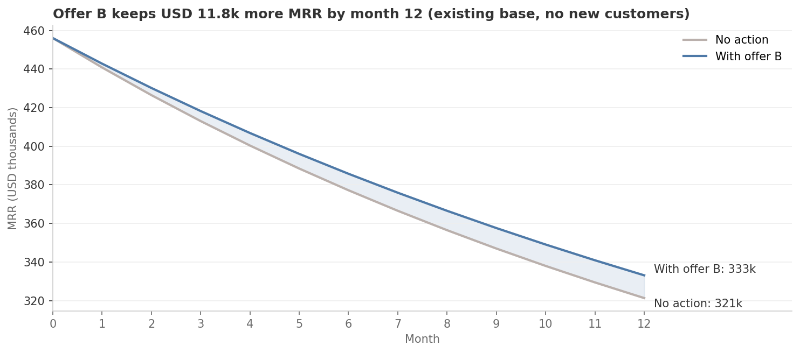

Which subscribers should we try to keep, and with what offer?
A subscription business loses about a quarter of its customers every year, and a common response is a discount for every customer at risk. I estimated which customers to target, which offer to make and how much each option is worth.
Make a targeted offer instead of a general discount.
- Offer month-to-month customers an annual contract with one free month, and make no offer to customers who already have a contract.
- Two of six segments (29% of customers) account for 68% of the revenue lost to churn. Customers on contracts seldom cancel.
- The plan pays off only if churn falls by about 23% among customers who accept, so it starts as a 12-month randomized pilot.

Who cancels
- Month-to-month customers churn 42.7% a year, versus 2.8% on two-year contracts. Customers in their first year (47.4%), electronic-check payers (45.3%) and fiber customers (41.9%) are also at high risk.
- Same question in SQL: month-to-month customers paying by electronic check are 1,850 customers with 53.7% churn and 30.4% of revenue.
- Logistic regression: a two-year contract is associated with 74% lower odds of churn (odds ratio 0.26), and each extra year of tenure with 32% lower odds. Customers choose their contracts, so these are associations, not causal effects.

Segments and lifetime value
I split month-to-month customers by tenure (new = 12 months or less) and value (bill above the median), and contract customers by value only. Customers within a segment have similar risk and value, and each segment can receive a different decision. For each one I estimated a discounted lifetime value (60% margin, 10% annual discount rate, 5-year horizon).
| Segment | Customers | Annual churn | LTV (USD) | Decision |
|---|---|---|---|---|
| 1 · Month-to-month, new, high bill | 812 | 70.0% | 490 | Offer B |
| 2 · Month-to-month, new, low bill | 1,182 | 38.6% | 487 | Offer B |
| 3 · Month-to-month, tenured, high bill | 1,231 | 41.5% | 1,017 | Offer B |
| 4 · Month-to-month, tenured, low bill | 650 | 18.5% | 858 | Offer B |
| 5 · Contract, high bill | 1,472 | 10.7% | 2,125 | No offer |
| 6 · Contract, low bill | 1,696 | 3.3% | 944 | No offer |
Comparing the offers
I compared three offers with explicit assumptions and computed the expected value of each one in each segment, compared with doing nothing: take-up × (customers saved × LTV − cost). The cost is paid for every customer who accepts, including those who would have stayed, and that is where a general discount loses money.
- A · 15% discount for 12 months: everyone takes it, churn falls 20%. Given to every month-to-month customer: −USD 239k.
- B · annual contract + 1 free month (month-to-month only): 25% take-up, churn falls 40% among acceptors. Given to segments 1–4: +USD 48k.
- C · free support and security for 12 months (USD 36): 60% take-up, churn falls 15%.
Sensitivity: offer B still wins if it works at 75% of the assumed strength (+USD 19.9k). At 50% or less, no offer pays. Take-up changes the size of the result, not its sign.

Pilot design
The offer pays off if churn falls by about 23% among the customers who accept. A randomized test, however, compares everyone offered the deal with a control group, and only about 25% are expected to accept. The difference the test can observe is therefore 5.7% (42.7% vs 40.3% churn).
- Detecting that difference needs 12,722 customers (two-sided, α = 0.05, power = 0.80). There are 3,875 eligible, and adding new sign-ups would take about 53 months.
- With all eligible customers, the test can detect a reduction of about 41%, close to the assumed 40%. It can confirm the assumption but not the break-even.
- Higher take-up reduces the sample needed: at 50%, about 1,600 customers per group would be enough.
- Duration: churn is measured over a year, so the result is read at 12 months, with contract conversions and monthly churn tracked every month as early signals.
Recommendation: run the pilot with all eligible customers, randomized 50/50, and test channels and messages to raise take-up at the same time. A non-significant result means the effect is below about 40%, not that the offer fails.
Limitations
- Churn period: the data says churners left "within the last month", but read literally that implies a 3.8-month average life against a 32.4-month average tenure. I treat churn as annual and flag it as the main limitation.
- Assumptions, not measurements: take-up, offer effectiveness, margin, discount rate and a hypothetical CAC of USD 300.
- Snapshot data: one point in time with no dates, so tenure groups are not real sign-up cohorts.
- Sample company: IBM sample data, so the numbers illustrate the method rather than a real business.
How I used AI
I directed the analysis; Claude Code handled the execution. I defined the question and scope, made every analytical decision (data cleaning, segmentation, LTV and offer assumptions, test parameters and the final recommendation) and set the checks the results had to pass. Claude Code wrote and ran the code, built the Tableau dashboard and drafted the text, which I reviewed and edited.
- Checks: key numbers recomputed independently from the raw data, and the notebook re-run from scratch.
- What they caught: an uncited churn definition, an offer applied to ineligible customers, rounding before later calculations and fragile code, all fixed. The power analysis later showed the pilot could not detect the break-even, which changed the measurement plan.
Data: Telco Customer Churn (IBM sample data, via Kaggle), 7,043 customers.